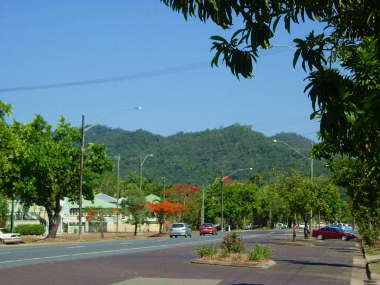
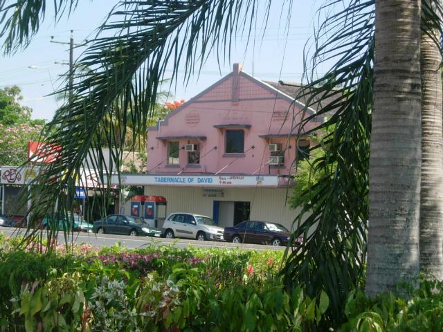
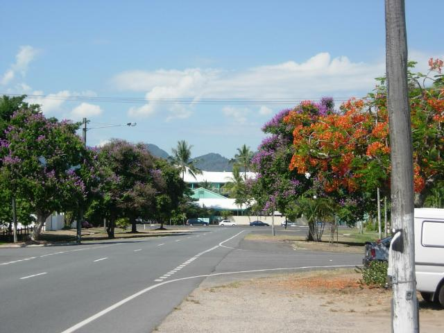
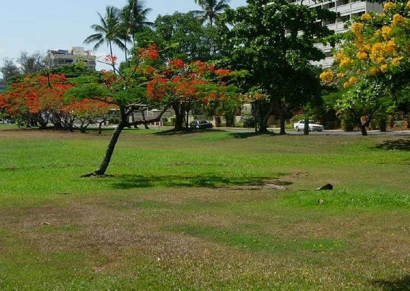
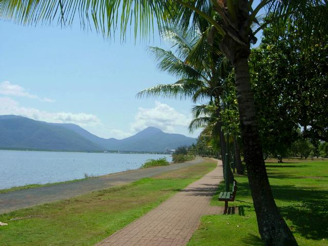
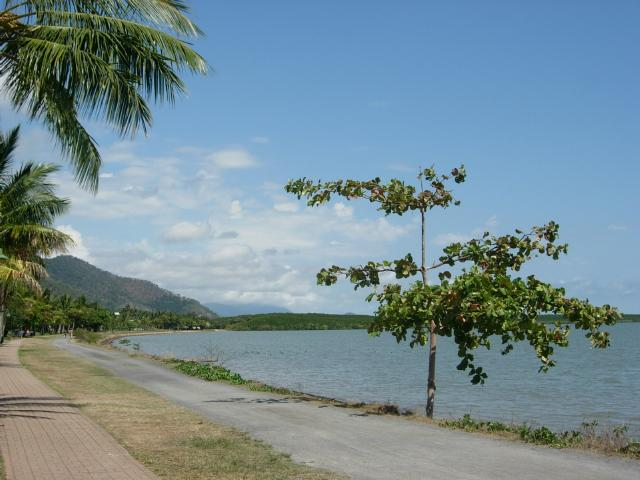
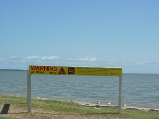
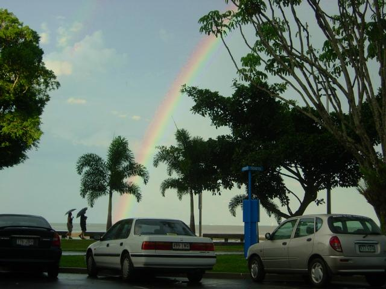
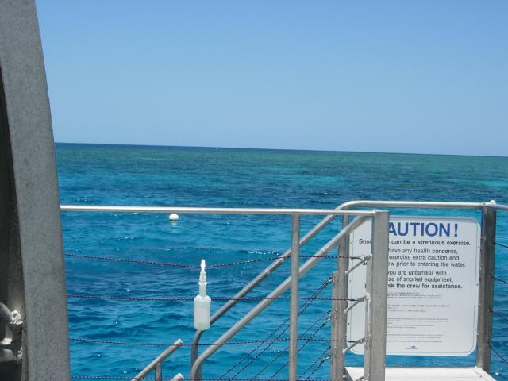

-=Cairns=-
A big storm with hail knocked down trees in Canberra last Friday. I got to see it from the taxiway at Sydney. We were the first plane cut off. Waited out the storm, then had to refuel cuz we idled on the axiway so long, then the ground crew wouldn't come out because there was still lightning, then refueling took 40 minutes.
I was zonked from the Global Cold everyone has, and slept through most of it--the lightning was amazing though, bolts looked several feet wide.
Drove up to Sydney that morning after an 8:30 come-to-Jesus meeting with an IBM project manager. Had the best yum cha (dim sum) I've ever had. Hey, I figured out that high tea is English yum cha! Saw HP4. Finally, a non-cute HP movie--they exorcised the ghost of Chris Columbus, and got rid of John Williams' ooh-ahh-how charming-it's-magic score. Now they gotta go back and remake the first three.

Slept through the flight, got in around midnight, and woke up in--Honolulu meets--

Florida. Cairns is a hot, humid party town that exists because of the Great Barrier Reef.
Don't miss the toad races! Slept through more than the flight. Slept until 8AM (late!), on the boat trip out to the barrier reef, between snorkeling sessions, on the boat trip back--18 hours that day, the same as Rex (and all other big and little cats). Seemed to break the back of the Global Cold that's been hanging on for weeks. Still sniffling and coughing, but no longer fatigued. (Global because everyone in VA has the same thing.)

Or the trees. They come in yellow, too.

The trees have bromeliads over a yard across. The photo didn't come out.

The town fronts a bay. This is the esplanade along the bay looking south...

.And north. But why was no one in the water on a hot day?

Then I found the "crocodiles inhabit these waters" sign. It also advises against camping close to the shore.

View from dinner table. An evening thunderstorm increased the heat and humidity. But on the ASTM (American Scale of Tropical Misery, which I just invented), it ranks a Tampa. I think you have to go to Darwin to rate incredibly brutal, or Miami.
Got to practice German with the waitress. She refused to my soup and entree (which is what appetizers are called here) together because "it would be crude". (No soup for you!)

Took a two hour boat trip to the reef. The water is so blue that you'd think I'd done image processing. I didn't. The clarity is unearthly..at least until the tide came in bringing sand with it. Underwater unlimited visibility.
The reef beggars description (or as we say here, buggers description). The colors are mostly modest tan and pale yellow--making the occasional flourescent green or lilac all the more impressive. But the variety of forms--and the size! Coral the size of dump trucks. Forests of ghostly grey branching coral the size of a house lot.